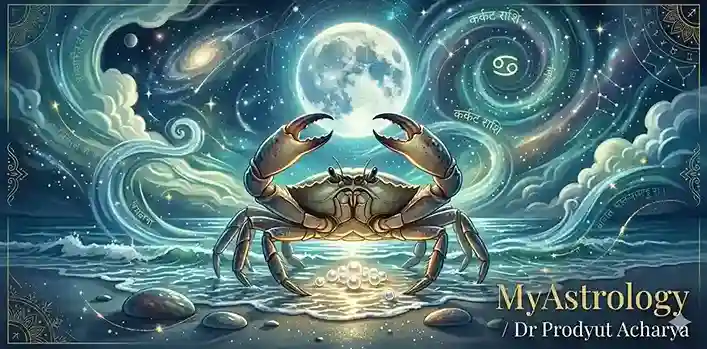
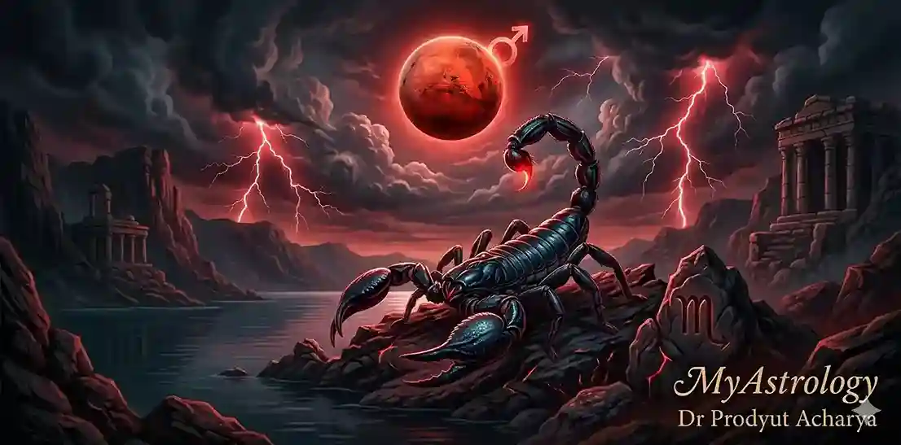
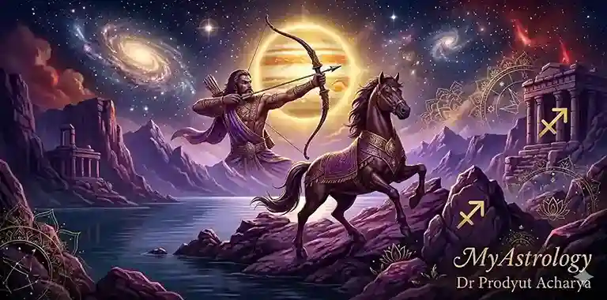
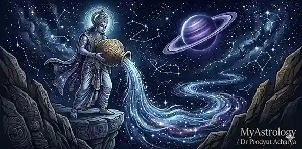
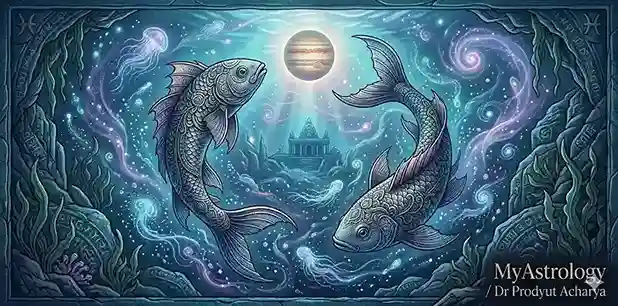

ড. প্রদ্যুৎ আচার্যের বৈদিক জ্যোতিষ বিশ্লেষণে জানুন — আপনার জন্ম রাশি (Birth Zodiac Sign) কীভাবে জীবনের প্রতিটি মুহূর্তকে প্রভাবিত করে।

MyAstrology Ranaghat প্রাচীন ভারতীয় জ্যোতিষ শাস্ত্র থেকে জানা যায়, ভাগ্য হলো আকাশপথে গ্রহ ও নক্ষত্রের অবস্থান অনুযায়ী মানুষের চেতনার ও জীবনের ছন্দের প্রতিফলন। সাধারণভাবে আমরা “জন্ম রাশি ও লগ্ন" বলতে সেই রাশিকে বুঝি, জন্মের মুহূর্তে চন্দ্র যে রাশিতে অবস্থান করেছিল, সেটাই মানুষের জন্ম রাশি এবং জন্ম সময় সূর্য যে রাশিতে উদয় হয়েছে সেটাই তার জন্ম লগ্ন। লগ্ন ও রাশি আমাদের মনোভাব, চরিত্র এবং আভ্যন্তরীণ প্রবণতা বোঝার একটি গুরুত্বপূর্ণ সূচনা পয়েন্ট।
জ্যোতিষশাস্ত্রে বলা হয়েছে, মানুষের জন্ম মুহূর্তে গ্রহ ও নক্ষত্রের অবস্থান কেবল দৈহিক নয়, মানসিক ও আধ্যাত্মিক দিকেও প্রভাব ফেলে। যেমন, চন্দ্র রাশি আমাদের আবেগ, অনুভূতি, মনোভাব এবং জীবনধারার সূক্ষ্ম গতিপথ নির্ধারণ করে। সূর্য রাশি মূলত আমাদের বাহ্যিক পরিচয় ও জীবনমুখী শক্তি নির্দেশ করে, যেখানে চন্দ্র রাশি অন্তর্গত মনস্তাত্ত্বিক দিক ও আবেগের গভীরতার প্রতীক।
বৈদিক দর্শন অনুযায়ী, যেমন “যথা পিণ্ডে তথা ব্রহ্মাণ্ডে” বলা হয়েছে, অর্থাৎ মানুষের জীবন এবং মহাজাগতিক ছন্দ একে অপরের সাথে সঙ্গতিপূর্ণ। এই দর্শন অনুসারে, আমাদের জন্ম রাশি কেবল ভাগ্য নির্ধারণ করে না, বরং আমাদের চরিত্র, চেতনা ও কর্মের সাথে সঙ্গতি রাখে। প্রতিটি রাশি ও নক্ষত্র মানুষের ব্যক্তিত্ব, স্বভাব, কর্মক্ষমতা ও সম্পর্কের ধরনকে সূক্ষ্মভাবে প্রভাবিত করে।
দার্শনিকভাবে দেখা যায়, রাশি শুধু সংখ্যাত্মক বা খগোলীয় একটি ধারণা নয়। এটি একটি আধ্যাত্মিক ভাষা, যা আমাদের জীবনের গতি, অভ্যাস, এবং ব্যক্তিগত বিকাশের পথ নির্দেশ করে। যেমন গীতার নির্দেশে বলা হয়েছে, “কর্মণ্যেবাধিকারস্তে মা ফলেষু কদাচন”, অর্থাৎ আমাদের দায়িত্ব হচ্ছে সচেতন কর্ম, আর রাশি ও নক্ষত্রের জ্ঞান সেই কর্মকে আরও সঠিক দিশায় পরিচালিত করতে সাহায্য করে।
সংক্ষেপে, জন্ম রাশি আমাদের অন্তর্দৃষ্টি ও জ্যোতিষিক নির্দেশনার সংমিশ্রণ, যা শুধুমাত্র ভবিষ্যৎ জ্ঞানের জন্য নয়, বরং আমাদের চেতনার বিকাশ ও জীবনধারার ভারসাম্য রক্ষার জন্যও গুরুত্বপূর্ণ।
Reference: MyAstrology Ranaghat – Authentic Vedic Astrology Insights
12 Zodiac Signs · Character Analysis · Vedic Astrology
জন্ম রাশি অনুযায়ী মানুষের চরিত্র, মনোভাব, আবেগ ও কর্মক্ষেত্রে প্রভাব নির্ধারিত হয়। এই টেবিলে মেষ থেকে তুলা রাশি পর্যন্ত প্রতিটি রাশির মূল বৈশিষ্ট্য, প্রধান স্বভাব এবং সাধারণ শুভ ও অশুভ প্রভাব বিস্তারিতভাবে দেওয়া হলো। (Source: MyAstrology Ranaghat – Vedic Astrology Insights)
| ♊ রাশি | 🌟 মূল চরিত্র ও গুণ | 🧠 প্রধান স্বভাব | শুভ প্রভাব | অশুভ প্রভাব |
|---|---|---|---|---|
| ♈ মেষ | দৃঢ়চেতা, সাহসী, উদ্যোগী, নেতৃত্বপ্রিয় | স্বতঃস্ফূর্ত, উদ্যমী, দ্রুত সিদ্ধান্তগ্রহণকারী | কর্মক্ষেত্রে সাফল্য, ব্যবসায় উন্নতি, সাহসিকতা | অহংকার, অস্থিরতা, সম্পর্কে টানাপোড়েন |
| ♉ বৃষ | ধৈর্যশীল, স্থিতিশীল, সৃষ্টিশীল, বাস্তবমুখী | সৌন্দর্যপ্রেমী, সম্পদ ও নিরাপত্তায় মনোযোগী | আর্থিক স্থিতি, শিল্পকলায় খ্যাতি, সম্পর্কের স্থায়িত্ব | একগুঁয়েমি, ভোগবিলাস প্রবণতা, অলসতা |
| ♊ মিথুন | জ্ঞানপ্রিয়, কৌতূহলী, যোগাযোগমুখী | বুদ্ধিমান, বহুমুখী দক্ষতা, মেলামেশা প্রিয় | শিক্ষায় সাফল্য, মজবুত সামাজিক সম্পর্ক | দ্বিধা, অস্থিরতা, মনোযোগের অভাব |
| ♋ কর্কট | সহানুভূতিশীল, দায়িত্বশীল, পরিবারপ্রিয় | আবেগপ্রবণ, সুরক্ষা ও নিরাপত্তা সচেতন | পারিবারিক সাফল্য, আবেগের ভারসাম্য | অতিরিক্ত আবেগ, মানসিক চাপ, উদ্বেগ |
| ♌ সিংহ | প্রভাবশালী, সৃজনশীল, আত্মবিশ্বাসী | উচ্চাকাঙ্ক্ষী, গর্বিত, দায়িত্বপূর্ণ | সামাজিক খ্যাতি ও সম্মান, নেতৃত্বে উন্নতি | অহংকার, একগুঁয়েমি, স্বাস্থ্য ঝুঁকি |
| ♍ কন্যা | বিশ্লেষণাত্মক, বাস্তবমুখী, পরিশ্রমী | সতর্ক, বিস্তারিত-মনস্ক, সংগঠিত | কর্মে দক্ষতা, স্বাস্থ্য সচেতনতা, শিক্ষায় সাফল্য | অতিরিক্ত আত্মসমালোচনা, উদ্বেগ, মানসিক চাপ |
| ♎ তুলা | সৌন্দর্যপ্রিয়, ন্যায়পরায়ণ, সামাজিক | সামঞ্জস্যবোধ, সম্পর্ক রক্ষায় দক্ষ | সম্পর্কে ভারসাম্য, সামাজিক খ্যাতি | সিদ্ধান্তহীনতা, দ্বিধা, সম্পর্কের জটিলতা |
| ♏ বৃশ্চিক | গভীর, দৃঢ়, লক্ষ্যনিষ্ঠ, রহস্যময় | সংগ্রামী, আবেগপ্রবণ, অন্তর্মুখী | আধ্যাত্মিকতায় সাফল্য, শক্তি ও প্রভাব বৃদ্ধি | অভিমান, অতিসংবেদনশীলতা, ক্ষমতার অপব্যবহার |
| ♐ ধনু | আদর্শবাদী, মুক্তচিন্তা, দার্শনিক | উদার, শিক্ষাপ্রিয়, ভ্রমণপ্রিয় | শিক্ষায় সাফল্য, আধ্যাত্মিক বিকাশ, ভ্রমণযোগ | অযৌক্তিক ঝুঁকি, অস্থিরতা, অর্থের চ্যালেঞ্জ |
| ♑ মকর | দায়িত্বশীল, ধৈর্যশীল, সংগঠিত | সুশৃঙ্খল, পরিশ্রমী, উচ্চাকাঙ্ক্ষী | কর্মোন্নতি, আর্থিক স্থিতি, নেতৃত্বে মর্যাদা | অতিনিয়ন্ত্রণ, মানসিক চাপ, সম্পর্কে দূরত্ব |
| ♒ কুম্ভ | উদার, মানবিক, সৃজনশীল | স্বাধীনচেতা, বুদ্ধিমান, সামাজিক সচেতন | মানবসেবায় সাফল্য, প্রযুক্তিতে উন্নতি | অসহযোগিতা, সম্পর্কের জটিলতা |
| ♓ মীন | সহানুভূতিশীল, স্বপ্নময়, আধ্যাত্মিক | নরম হৃদয়, সৃজনশীল, সহানুভূতিপ্রবণ | শিল্প, আধ্যাত্মিকতা, সম্পর্কের মাধুর্য | অতিসংবেদনশীলতা, আত্মবিশ্বাসের ঘাটতি |
🐏 মেষরাশি রাশিচক্রের প্রথম রাশি। এর অধিপতি গ্রহ হল মঙ্গল, যাকে ভারতীয় জ্যোতিষ শাস্ত্রে দেব সেনাপতি বলা হয়। অগ্নি ও উদ্যমের কারক এই গ্রহের প্রভাবে মেষরাশির জাতক-জাতিকা সকল কাজে প্রেরণা ও কর্মশক্তিতে ভরপুর। ভারতের স্বনামধন্য জ্যোতিষী ও হস্তরেখাবিদ্ প্রদ্যুৎ আচার্য-এর বিশ্লেষণ মতে, মেষরাশির মানুষ প্রতিযোগিতা, প্রতিবাদ, নেতৃত্ব প্রদানে প্রাকৃতিকভাবে পারদর্শী। এরা শুধু প্রতিকূলতাকে মোকাবেলা করেন না, বরং তা থেকে শিক্ষা নিয়ে এগিয়ে যান।
বৈদিক জ্যোতিষ শাস্ত্র অনুযায়ী, মেষরাশির জাতক-জাতিকা অন্তরের দিকে উদার, সদয় ও ন্যায়পরায়ণ। তবে অন্যায় বা অবিচার দেখলেই তারা আপসহীন প্রতিবাদী হয়ে ওঠেন। কিছু Expert Astrologer and Palmist মনে করেন, এরা কাজ শুরু করেন প্রবল উৎসাহ নিয়ে, কিন্তু মাঝে মাঝে আগ্রহ হারাতে পারেন। আবেগের প্রবলতা এবং সংবেদনশীল মন কখনো কখনো তাদের শত্রুর চেয়ে বড় চ্যালেঞ্জ হয়ে দাঁড়ায়। শারীরিক কষ্ট সহজে সহ্য করলেও, মানসিক আঘাত গ্রহণে এরা সবসময় শক্তিশালী নয়।
ভারতীয় অভিজ্ঞ জ্যোতিষী ও হস্তরেখাবিদ্-এর মতে, মেষরাশির মানুষ যাদের সঙ্গে মানসিক মিল অনুভব করেন, তাদের সঙ্গে দীর্ঘস্থায়ী সম্পর্ক গড়ে তুলবেন। তবে মানসিক আঘাত পেলেও সম্পর্ক ছিন্ন করতে দ্বিধা করবেন না। পারিবারিক জীবনে দায়িত্ববোধ প্রবল, কিন্তু নতুন দায়িত্ব চাপ সৃষ্টি করতে পারে। মতের অমিল থেকে ছোটখাটো ঝঞ্ঝাট বড় আকার নেয়, যা ধৈর্য ও বোঝাপড়ার মাধ্যমে মিটিয়ে নেয়া যায়।
পশ্চিমবঙ্গের নির্ভরযোগ্য জ্যোতিষ ও হস্তরেখা পরিষেবা প্রতিষ্ঠান MyAstrology-এর বিশ্লেষণ অনুযায়ী, মেষরাশির জাতকেরা নেতৃত্বগুণসম্পন্ন ও প্রতিযোগিতামূলক কাজে পারদর্শী। এরা উদ্যোমী হওয়ায় ব্যবসা, প্রতিরক্ষা, ক্রীড়া, টেক স্টার্টআপে সফল হতে পারেন। তবে ঝোঁকের বশে সিদ্ধান্ত বা খরচের কারণে অর্থনৈতিক সমস্যা তৈরি হতে পারে। সাফল্য সত্ত্বেও, প্রিয়জন সবসময় পাশে না থাকলে হতাশা অনুভব করতে পারেন।
গ্রহ-নক্ষত্রের প্রভাবে জীবনে নানা বাধা-বিপত্তি আসতে পারে। কোনো অভিজ্ঞ জ্যোতিষী ও হস্তরেখাবিদ্-এর পরামর্শে, ধৈর্য, চিন্তাশীলতা এবং স্বভাবের কিছু পরিবর্তনের মাধ্যমে সমস্যা সমাধান সম্ভব। ঝোঁকের বশে সিদ্ধান্ত না নিয়ে পরিকল্পনা করে এগোনোই শ্রেয়।
🙏 MyAstrology Ranaghat 🫶
🐂 বৃষরাশি রাশিচক্রের দ্বিতীয় রাশি। এর অধিপতি গ্রহ হল শুক্র, যা সৌন্দর্য, আরাম-আয়েশ ও ভোগবিলাসের প্রতীক।
এই প্রভাবের কারণে বৃষ রাশির মানুষ প্রায়শই ধৈর্যশীল, স্থির এবং জীবনের প্রতিটি ক্ষেত্রে সুরক্ষার সন্ধানী। জ্যোতিষী ও হস্তরেখাবিদ্ প্রদ্যুৎ আচার্য-এর মতে, ধৈর্য, স্থিরতা ও বাস্তববাদিতা এদের প্রধান গুণ।
বৃষরাশির জাতকরা শান্ত, সংযত এবং দৃঢ়চেতা। তাদের মন স্থির ও বিশ্বাসযোগ্য, যা জীবনকে সুশৃঙ্খল রাখে। নতুন উদ্যোগে ধীরগতি হলেও একবার মনস্থির করলে তারা দৃঢ় মনোযোগ দিয়ে লক্ষ্য অর্জন করেন। তথাপি কিছু স্বনামধন্য জ্যোতিষ জন্মকুণ্ডলী বিশ্লেষণে অভিমত প্রকাশ করেছেন যে, একগুঁয়ে স্বভাবের কারণে মাঝে মাঝে এই জাতকরা অপ্রয়োজনীয় জটিলতা সৃষ্টি করতে পারেন, যা জীবনে শিক্ষণীয় অভিজ্ঞতা দেয়।
পরিবার বৃষ রাশির জাতকের জীবনে প্রথম অগ্রাধিকার পায়। কোলকাতার সেরা জ্যোতিষী ও হস্তরেখাবিদ্র অভিমত অনুযায়ী,
যারা একবার বৃষ রাশির জীবনে প্রবেশ করেন, তাদের সঙ্গে দীর্ঘস্থায়ী ও বিশ্বস্ত সম্পর্ক গড়ে তোলা হয়। প্রেম ও বিবাহে তারা ধৈর্যশীল, বিশ্বস্ত ও নির্ভরযোগ্য। তবে অতিরিক্ত অধিকারবোধের কারণে মাঝে মাঝে সম্পর্কের মধ্যে চাপ ও দ্বন্দ্ব দেখা দিতে পারে।
বৃষ রাশির জাতকেরা আর্থিক স্থিতিশীলতাকে সর্বাধিক গুরুত্ব দেন। ব্যাংকিং, কৃষি, রিয়েল এস্টেট, শিল্পকলা এবং সংগীত—এই সব ক্ষেত্রে তারা সফলতার সঙ্গে এগিয়ে যান। অভিজ্ঞ ভারতীয় জ্যোতিষী ও হস্তরেখাবিদ্-এর অভিমত, যে তাদের ভোগবিলাস প্রবণতা মাঝে মাঝে সঞ্চয় ও বিনিয়োগে বাধা সৃষ্টি করতে পারে। দীর্ঘমেয়াদি বিনিয়োগ ও স্থায়ী ব্যবসায় তারা ধীরে ধীরে সাফল্য অর্জন করেন।
জীবনে স্থায়ী অগ্রগতি চাইলে জেদ নিয়ন্ত্রণ অপরিহার্য। নতুন সুযোগ গ্রহণের মানসিকতা গড়ে তুলুন। অর্থ সঞ্চয় ও খরচের মধ্যে সঠিক ভারসাম্য বজায় রাখলে আর্থিক সাফল্য দীর্ঘস্থায়ী হবে। ড: প্রদ্যুৎ আচার্যের অনলাইন জ্যোতিষ পরিষেবার মাধ্যমে সঠিক পরামর্শ নেওয়া সম্ভব, যেখানে আধ্যাত্মিকতা ও নৈতিকতার সমন্বয়ে জীবনে শান্তি আসে।
💫 Online Astrology and Palmistry Consultant Services 🫒
👬 মিথুন রাশি রাশিচক্রের তৃতীয় রাশি। এর অধিপতি গ্রহ বুধ, যিনি জ্ঞান, বুদ্ধি ও যোগাযোগের প্রাঞ্জল দিকের দিকনির্দেশক। মিথুন রাশির জাতক-জাতিকা সাধারণত বুদ্ধিদীপ্ত, কৌতূহলী, এবং বাকপটু। Professional Astrologer India এবং জ্যোতিষী ও হস্তরেখাবিদ্ প্রদ্যুৎ আচার্য-এর মতে, এদের পরিবর্তনশীল স্বভাব, তীক্ষ্ণ বুদ্ধি ও সুদক্ষ যোগাযোগ ক্ষমতা জীবনের মূল শক্তি। বাকশক্তি তাদের চিন্তাভাবনা বাস্তবায়নের জন্য প্রেরণা জোগায় এবং সৃজনশীলতা বিকাশে সহায়ক।
মিথুনরাশির জাতক-জাতিকা কৌতূহল ও উদ্ভাবনী মননের অধিকারী। এদের মনে নিত্যনতুন চিন্তা জন্ম নেয় এবং প্রতিটি অভিজ্ঞতাকে নতুন আলোকে দেখতে চান। মানসিক পরিবর্তন তীক্ষ্ণ হলেও স্থিরতার অভাব দেখা দেয়। মানুষের সঙ্গে সহজেই মিশতে পারলেও গভীর আবেগ প্রকাশে কিছুটা সংযমী। কথোপকথনে দক্ষ হওয়ায় অন্যকে সহজেই প্রভাবিত করতে পারেন, যা সামাজিক ও পেশাগত জীবনে সহায়ক।
সম্পর্কের ক্ষেত্রে মিথুন রাশির জাতকেরা চঞ্চল, বন্ধুত্বপূর্ণ ও আকর্ষণীয়। এরা সঙ্গীর সঙ্গে আলাপ-চার্চা, বন্ধুত্ব ও সৃজনশীল সহমত বজায় রাখতে পছন্দ করেন। তবে কোলকাতার সেরা জ্যোতিষী এবং পশ্চিমবঙ্গের স্বনামধন্য জন্ম কুণ্ডলী বিশ্লেষকরা বলেন, মিথুনের পরিবর্তনশীল মন কখনও কখনও সম্পর্কের স্থিতিশীলতায় প্রভাব ফেলে। পারিবারিক জীবন সাধারণত আনন্দময় থাকে, তবে মতপার্থক্য ও ভুল বোঝাবুঝি মাঝে মাঝে অস্থিরতা সৃষ্টি করতে পারে।
মিথুন রাশির জাতকেরা যোগাযোগ, শিক্ষা, মিডিয়া, লেখালেখি, তথ্যপ্রযুক্তি এবং মার্কেটিং ক্ষেত্রে অসাধারণ সাফল্য অর্জন করতে সক্ষম। একাধিক প্রকল্পে মনোযোগী এবং সৃজনশীল। তবে ভারতের বিশ্বস্ত জ্যোতিষীদের মতে, স্থায়ী পরিকল্পনার অভাবে আর্থিক ওঠানামা দেখা দেয়। দীর্ঘমেয়াদে মনোযোগ ধরে রাখলে স্থায়ী সমৃদ্ধি নিশ্চিত হয়।
স্থিরতা, ধৈর্য এবং বিবেচনাশীল মনোভাব মিথুন রাশির জীবনের সফলতার চাবিকাঠি। কোনো সিদ্ধান্ত নেওয়ার আগে সময় নিয়ে চিন্তা করা উচিত। অযথা কৌতূহল বা দ্বিধা এড়ানো উচিৎ। Online Trusted Astrologer-এর দিকনির্দেশনা অনুসরণ, ধ্যান বা যোগাভ্যাসের মাধ্যমে মানসিক শান্তি ও জীবনের ভারসাম্য বজায় রাখা সম্ভব।
🪷 MyAstrology Online Astrologer 🌹

🦀 কর্কট রাশি রাশিচক্রের চতুর্থ স্থান, যার অধিপতি গ্রহ চন্দ্র। বৈদিক জ্যোতিষ মতে চন্দ্র হল মনের প্রতীক, মাতৃত্ব ও জলতত্ত্বের কারক। তাই কর্কট রাশির জাতকেরা আবেগময়, অন্তর্দর্শী, এবং পারিবারিক বন্ধনে গভীরভাবে যুক্ত। ভারতের অভিজ্ঞ জ্যোতিষী ও হস্তরেখাবিদ্-দের মতে এঁরা অন্তরে কোমল হলেও পরিস্থিতি কঠিন হলে দৃঢ় ও অনমনীয় হতে জানেন।
এঁরা সহজ-সরল, স্নেহময় এবং অনুভূতিপ্রবণ। প্রিয়জনের জন্য গভীর আত্মত্যাগে প্রস্তুত থাকেন। আত্মসম্মান তাদের জীবনের মূল ভিত্তি; তাই অবহেলা বা অপমান সহজে সহ্য করতে পারেন না। অপরের দুঃখে হৃদয় তাদের কেঁদে ওঠে, এবং সহমর্মিতা তাঁদের চরিত্রের প্রধান অলঙ্কার।
কর্কট রাশির জাতক-জাতিকারা পারিবারিক জীবনে নিবেদিত প্রাণ। সন্তান, দাম্পত্য ও আত্মীয়তার বন্ধন তাদের জীবনের শক্তি। সম্পর্ক রক্ষায় তাঁরা আত্মত্যাগে প্রস্তুত থাকেন। তবে Horoscope Analysis অনুসারে, অতিরিক্ত আবেগ ও অনাহূত হস্তক্ষেপ মাঝে মাঝে সম্পর্ককে জটিল করে তোলে।
শিক্ষকতা, চিকিৎসা, সাহিত্য, শিল্প ও সমাজসেবায় কর্কট রাশির মানুষের যোগ্যতা অসাধারণ। Expert horoscope analyst India মনে করেন এঁরা ধীরে কিন্তু নিশ্চিতভাবে উন্নতির পথ খোঁজেন, ঝুঁকিপূর্ণ কাজ এড়িয়ে চলেন। আর্থিক দিক তুলনামূলক স্থিতিশীল হলেও আবেগপ্রবণ খরচ কখনও কখনও সমস্যার কারণ হতে পারে।
চন্দ্র যেমন উত্থান-পতনের প্রতীক, তেমন কর্কট রাশির জীবনেও ওঠা-নামা অনিবার্য। মানসিক দৃঢ়তা বাড়াতে ধ্যান, প্রার্থনা এবং Vedic Astrology Consultation বিশেষভাবে সহায়ক। পারিবারিক সম্পর্কে ধৈর্য ও বাস্তববোধ বজায় রাখলে তাঁদের জীবনে শান্তি ও সমৃদ্ধি স্থায়ী হয়।
🥀 Online Astrology Consultation India 🌷
🦁 সিংহ রাশি রাশিচক্রের পঞ্চম রাশি। এর অধিপতি গ্রহ হল সূর্য, শক্তি, আলো ও নেতৃত্বের অনন্য প্রতীক। রাশিচক্রে রবি হলো রাজা, তাই সিংহ রাশির জাতক-জাতিকা প্রাকৃতিকভাবে কেন্দ্রবিন্দুতে থাকতে ভালোবাসেন। তারা জীবনকে আলোর দৃষ্টিতে দেখেন, নিজেদের চারপাশে অনুপ্রেরণা ছড়ান। বৈদিক জ্যোতিষ প্রতিষ্ঠান MyAstrology-এর বিশ্লেষণ অনুযায়ী, সিংহ রাশির মানুষ আত্মবিশ্বাসী, সৃজনশীল এবং নেতৃত্বগুণে সমৃদ্ধ।
সিংহ রাশির মানুষ আত্মসম্মান ও মর্যাদার প্রতি অত্যন্ত সচেতন। তারা সম্মান রক্ষায় আপসহীন এবং নিজস্ব দৃষ্টিভঙ্গিতে দৃঢ়। উদার মনের অধিকারী হলেও কখনও কখনও অহংকার তাদের মনকে প্রভাবিত করে। ভারতের কুন্ডলি বিশ্লেষণে বিশেষজ্ঞদের অভিমত অনুযায়ী, প্রশংসা পেলে তাদের কর্মপ্রেরণা দ্বিগুণ হয় এবং তারা অন্যদের জন্য অনুপ্রেরণার উৎস হয়ে ওঠেন। আত্মবিশ্বাস কখনও অতিরিক্ত হলে একগুঁয়ে স্বভাব প্রকাশ পায়।
সিংহ রাশির মানুষ পরিবারে অভিভাবকের মতো দায়িত্ব পালন করেন। তারা সম্পর্ককে ভালোবাসা ও যত্নে ভরা রাখতে চান। কোলকাতার অভিজ্ঞ জ্যোতিষীরা বলছেন, কখনও কখনও তারা নিজের মতামত অন্যের উপর চাপিয়ে দেওয়ার প্রবণতায় পড়েন, যা মতবিরোধের কারণ হতে পারে। সঙ্গীর প্রতি তারা বিশ্বস্ত, তবে নিজের প্রশংসা এবং মূল্যায়ন কামনা করেন সর্বদা।
কর্মজীবনে সিংহ রাশির মানুষ প্রশাসনিক কাজ, রাজনীতি, শিল্প-সংস্কৃতি, মঞ্চকলা, শিক্ষকতা ও ম্যানেজমেন্টে দক্ষ। আত্মবিশ্বাস ও নেতৃত্বের কারণে তারা দলকে সফলতার শিখরে পৌঁছে দেন। তবে অহংকার ও জেদি স্বভাব আর্থিক ক্ষতি ডেকে আনতে পারে। নির্ভরযোগ্য ক্যারিয়ার কনসালটেশন অনুযায়ী, অর্থ ভাগ্যে উন্নতি থাকে, তবে খরচও প্রাচুর্যে হয়।
অহংকার নিয়ন্ত্রণ করে উদারতা বজায় রাখাই শ্রেয়। ধৈর্য ধরে অন্যদের কথা শোনা এবং দলগত কাজে অংশ নেওয়া সম্পর্ককে আরও দৃঢ় করে। নিয়মিত প্রার্থনা, আত্মচিন্তন এবং Astrology ও ritual guidance অনুসরণ করলে সিংহ রাশির মানুষের জীবনে শান্তি ও সাফল্য আসে।
💫 বাঙালি জ্যোতিষী প্রদ্যুৎ আচার্য 🌻
💃 কন্যা রাশি রাশিচক্রের ষষ্ঠ রাশি। এর অধিপতি বুধ, যা এ রাশির মানুষের বুদ্ধি ও বিশ্লেষণক্ষমতাকে প্রখর করে তোলে। ভারতীয় জ্যোতিষ বিশেষজ্ঞদের মতে, কন্যা রাশির জাতক-জাতিকারা সাধারণত নিখুঁত-মনস্ক, দায়িত্বশীল, বিশ্লেষণধর্মী এবং পরিমিতিবোধসম্পন্ন। এরা সহজ-সরল ব্যবহার করেন, শৃঙ্খলাবদ্ধ জীবন যাপন করেন, এবং নক্ষত্রভেদে যেমন উত্তরফল্গুনী, হস্তা ও চিত্রা—প্রত্যেক নক্ষত্র তাদের স্বভাবের সূক্ষ্ম পার্থক্য নির্ধারণ করে।
সম্মান ও অভিমান বিষয়ে সংবেদনশীল কন্যা রাশির মানুষ প্রায়ই অন্যের মর্যাদা রক্ষায় নিজে চুপ করে থাকেন। ভাগ্যের চেয়ে কর্মে বিশ্বাসী এই জাতকরা কঠোর পরিশ্রমের মাধ্যমে ধীরস্থির অগ্রগতি অর্জন করেন। তবে অতিরিক্ত দায়িত্ব নেওয়া বা আর্থিক ওঠানামা মাঝে মাঝে চাপ সৃষ্টি করতে পারে। এ ক্ষেত্রে কোলকাতার সেরা জ্যোতিষী না খুঁজে, অভিজ্ঞ জ্যোতিষী ও দর্শন বিশেষজ্ঞ থেকে যথাযথ পরামর্শ গ্রহণ করাই উত্তম।
বহু PhD in Vedic Astrology Gold Medalist Astrologer-দের মতে, কন্যা রাশির জাতক-জাতিকার পর্যবেক্ষণ ক্ষমতা প্রখর। তথ্য যাচাই ছাড়া এরা সিদ্ধান্ত নিতে চান না। ছোটখাটো ভুলও এদের চোখ এড়ায় না—নিজের ক্ষেত্রেও, অন্যের ক্ষেত্রেও। সাহায্য চাওয়ার আগে নিজেরাই সমাধান করতে চাওয়ায় অনেকে এদের অহংকারী ভাবলেও, প্রকৃতপক্ষে এরা দায়িত্বশীল ও আত্মসম্মানী।
ভারতের অন্যতম জ্যোতিষী প্রদ্যুৎ আচার্য বলেন, কন্যা রাশির মানুষ সম্পর্ক রক্ষা ও মজবুত করার জন্য নিরলস চেষ্টা করেন। ছোট ছোট যত্নে ভালোবাসা প্রকাশিত হয়। তবে ভুল বোঝাবুঝি হলে সরাসরি বলতে দ্বিধা হয় এবং চুপচাপ দূরত্ব বজায় রাখেন। পরিবারে সবার প্রয়োজন আগে রাখার প্রবণতায় নিজেকে অবহেলার শিকার হতে হয়।
কন্যা রাশির মানুষের জন্ম কোষ্ঠি বিশ্লেষণ অনুসারে এরা গবেষণা, ডেটা অ্যানালিটিক্স, অ্যাকাউন্টস ও অডিট, স্বাস্থ্যসেবা, শিক্ষা-প্রশিক্ষণ, লেখালেখি-সম্পাদনা, প্রকল্প ব্যবস্থাপনা—এ ধরনের খুঁটিনাটি-কেন্দ্রিক কাজে সাফল্য অর্জন করেন। ধীরগতির হলেও স্থায়ী অগ্রগতি হয়। বাজেট মেনে চলতে সক্ষম, তবে অতিচিন্তায় বিনিয়োগে দেরি হতে পারে।
বুধ-প্রভাব শক্তিশালী করতে নিয়মিত পাঠ, লেখালেখি ও স্কিল-আপগ্রেডে সময় দিন। কাজ-জীবনে ভারসাম্য রাখুন এবং “না” বলতে শিখুন—অতিরিক্ত দায়িত্ব নেবেন না। খুঁতখুঁতে মনকে ইতিবাচক পথে চালাতে রুটিন-রিভিউ রাখুন: সাপ্তাহিক লক্ষ্য, মাসিক বাজেট, ত্রৈমাসিক আপস্কিল। প্রয়োজন হলে Trusted Astrologer and Expert Palmist-এর পরামর্শ নিন।
🌹 আপনার পথ হোক সুসংগঠিত ও সফল MyAstrology
⚖️ তুলা রাশি রাশিচক্রের সপ্তম অধিষ্ঠান। এর অধিপতিগ্রহ শুক্র। নামের মধ্যেই লুকিয়ে আছে এর প্রকৃতি—“তুলা” অর্থাৎ ভারসাম্য। যেমন তৌলদণ্ড সমান দুই পাত্রে ন্যায় বিচার করে, তেমনি তুলারাশির মানুষ জীবনে খোঁজে সমতা, সমঝোতা ও সৌন্দর্যের ছাপ। এরা সহজ-সরল, সহনশীল, সামাজিক এবং শান্তির পূজারি। তবে Online astrology and palmistry consultant services India-এর গবেষণা বলছে, মাঝে মাঝে অন্যের প্রভাব কিংবা মতামতের কাছে আত্মসমর্পণ করে এরা নিজের দৃঢ় সিদ্ধান্ত থেকেও সরে আসতে পারে।
তুলা রাশির মানুষ ভাগ্যকে নিছক কপালের লিখন বলে মনে করে না; তারা বিশ্বাস করে শ্রম, দক্ষতা ও প্রজ্ঞার আলোয় নিজের নিয়তি নির্মাণে। জীবনের প্রতিকূলতা এরা ধৈর্য ও যুক্তিবুদ্ধির সঙ্গে মোকাবিলা করে। famous astrologer and expert Palmist-দের মতে, সঠিক জ্যোতিষ প্রতিকার গ্রহণ করলে তুলা রাশির জাতক শান্তি ও উন্নতির দ্বার উন্মুক্ত করতে পারে।
তুলার অন্তর্গত মানুষ বিশ্লেষণধর্মী ও নিখুঁত দৃষ্টিভঙ্গির অধিকারী। এরা প্রমাণ ও তথ্য যাচাই ছাড়া সিদ্ধান্ত নেয় না। ক্ষুদ্রতম ভুলও এদের চোখ এড়ায় না। সমস্যার সমাধানে প্রথমেই নিজের সামর্থ্যে ভরসা করে; তাই অনেক সময় অন্যদের কাছে কিছুটা দূরত্বপ্রবণ কিংবা অহংকারী মনে হতে পারে। কিন্তু বাস্তবে এরা দায়িত্ববান, আত্মসম্মানী এবং ন্যায়ের প্রতি অনুগত।
তুলা রাশির জাতক/জাতিকা সম্পর্কে সমঝোতাপূর্ণ এবং যত্নশীল। Horoscope and palm reading দ্বারা জানা যায়, এরা সম্পর্ক টিকিয়ে রাখতে ছোট ছোট ভালোবাসার প্রকাশকে গুরুত্ব দেয়। তবে ভুল বোঝাবুঝির সময় চুপ থেকে দূরত্ব বজায় রাখে। পরিবারে তারা দায়িত্বশীল, অন্যের প্রয়োজনকে প্রাধান্য দেয়, এমনকি নিজের ইচ্ছাকে বিসর্জন দিতে দ্বিধা করে না।
প্রশাসন, আইন, ব্যবসা, প্রকল্প ব্যবস্থাপনা, শিক্ষা কিংবা শিল্প—যে কোনো ক্ষেত্রে তুলার জাতকরা নিখুঁত পরিকল্পনা ও তীক্ষ্ণ বিশ্লেষণী ক্ষমতা প্রদর্শন করে। Life prediction Indian astrologer-দের মতে, এদের অগ্রগতি ধীর হলেও স্থায়ী। বাজেট সচেতন হলেও অতিরিক্ত ভাবনা অনেক সময় বিনিয়োগে বিলম্ব ঘটায়।
নিজের প্রজ্ঞা ও বিচারশক্তিকে কাজে লাগান, তবে অকারণ দায়িত্ব নিজের কাঁধে তুলে নেবেন না। নিয়মিত দক্ষতা বৃদ্ধি করুন এবং প্রয়োজনে যথাযথ জ্যোতিষ প্রতিকার গ্রহণ করুন। এতে মানসিক শান্তি বজায় থাকবে এবং ভাগ্য প্রসারিত হবে। অভিজ্ঞ Get horoscope reading by expert astrologer India-এর পরামর্শ নিলে জীবনপথে সঠিক নির্দেশনা পাবেন।
Best astrologer Dr. Prodyut Acharya

🦂 বৃশ্চিক রাশি রাশিচক্রের অষ্টম রাশি, এর অধিপতি মঙ্গল। প্রতীক চিহ্ন কাঁকড়াবিছে—যেন অন্তরের গভীরে লুকোনো রহস্যময় শক্তির প্রতীক। ভারতীয় বৈদিক জ্যোতিষ অনুযায়ী বৃশ্চিক রাশির মানুষ সাধারণত নীরব স্বভাবের হলেও প্রয়োজনের মুহূর্তে সিদ্ধান্তে দৃঢ় ও কর্মে দ্রুত। এরা সহজে বিরোধে জড়ায় না, কিন্তু অপমান সহ্য করতে পারে না; যথাসময়ে কঠিন প্রতিক্রিয়া জানানোর ক্ষমতা রাখে।
এদের জীবনযাত্রায় লুকানো থাকে এক ধরনের অন্তর্গত শক্তি। কঠিন পরিস্থিতি সামনে এলেও আত্মবিশ্বাস হারায় না। ধৈর্যশীল ও আত্মনিয়ন্ত্রিত হলেও, মঙ্গলের প্রভাবে মাঝে মাঝে রাগ প্রকাশ পায়। রানাঘাট নদীয়ার সেরা জ্যোতিষী প্রদ্যুৎ আচার্য মনে করেন—বৃশ্চিক জাতককে মধ্য বয়স পর্যন্ত নানা পরীক্ষার সম্মুখীন হতে হয়, তবে ধৈর্য ও প্রজ্ঞা অবলম্বন করলে সাফল্য অবধারিত। জন্ম কুণ্ডলী বিশ্লেষণ প্রমাণ করে—বৃশ্চিক চরিত্রে শুভ ও অশুভ উভয়েরই প্রাচুর্য বিদ্যমান।
Online Astrology Consultation Services, MyAstrology এর গবেষণায় দেখা যায়, বৃশ্চিক রাশির মানুষ গভীর চিন্তাশীল, নীরবতায় ভরা অথচ পরিকল্পনায় দৃঢ়। বন্ধুত্বে আত্মত্যাগী, কিন্তু প্রত্যাশা পূরণ না হলে মানসিক আঘাত পায়। নিজের যন্ত্রণাকে অন্তরে গোপন রাখে, তাই প্রায়শই এরা রহস্যময় ও ইগো-নির্ভর মনে হয়। অন্তর্গত জগতের বিশ্লেষণ ও আত্মসংলাপ এদের প্রকৃত শক্তি।
সম্পর্কের ক্ষেত্রে বৃশ্চিক জাতক অন্তর্গত কোমলতায় ভরা। যত্নশীল হলেও ভুল বোঝাবুঝি হলে তারা নীরবে দূরত্ব রাখে। Best Astrologer and Palmist Dr Prodyut Acharya তাঁর বহু Horoscope Analysis থেকে দেখেছেন—বৃশ্চিকরা চাপা প্রকৃতির হলেও পরিবারে দায়িত্বশীল। মানসিক দুঃখ সহজে প্রকাশ করে না, নিজের ভেতরে রেখে দেয়।
বৃশ্চিক রাশির জাতক কর্মক্ষেত্রে গভীর মনোযোগী। ব্যবসা, প্রশাসন, গবেষণা, প্রকল্প পরিচালনা ও সৃজনশীল কাজে এদের দক্ষতা স্পষ্ট। অভিজ্ঞ জ্যোতিষী ও স্বনামধন্য হস্তরেখাবিদ্দের মতে, বৃশ্চিকের অগ্রগতি ধীর হলেও স্থায়ী হয়। মঙ্গলের প্রভাবে প্রতিকূলতার মধ্যেও এগিয়ে যাওয়ার ক্ষমতা রাখে।
ধৈর্য, সচেতনতা ও অন্তর্দৃষ্টি কাজে লাগান। প্রয়োজনে সঠিক গ্রহ প্রতিকার গ্রহণ করুন। পশ্চিমবঙ্গের অভিজ্ঞ জ্যোতিষী বা expert Palmist এর পরামর্শে জীবন সহজ ও শান্ত হতে পারে। বৃশ্চিকের অন্তর্গত শক্তি যদি সঠিক পথে ব্যবহার হয়, তবে জীবনে উন্নতি অনিবার্য।
ঈশ্বর আপনার অন্তর্জীবনকে উন্নত করুন — প্রদ্যুৎ আচার্য

🏹 ধনু রাশি রাশিচক্রের নবম রাশি, এর অধিপতি গ্রহ বৃহস্পতি। প্রতীক চিহ্ন হল অশ্বারোহী ধনুর্ধর—নিচে অশ্ব, উপরে ধনুক হাতে যোদ্ধা, যিনি লক্ষ্যের দিকে বাণ ছুঁড়ছেন। বহু birth chart analysis এবং Astrology Research প্রমাণ করেছে, ধনু রাশির মানুষের অন্তরে বাস করে এক অদম্য স্বাধীনতার স্পৃহা। তাঁরা কারও অধীন হতে চান না, আবার যে কাজে মন দেন, তা পূর্ণতা দেবার জন্য সর্বশক্তি প্রয়োগ করেন। সাহস ও আত্মবিশ্বাস তাঁদের জীবনের মূলধন, যদিও প্রতিকূলতার জটিলতা কখনও লক্ষ্যপথ বিলম্বিত করে।
Vedic Astrologer and Palmist Dr Prodyut Acharya–র মতে, মূলা নক্ষত্রের অধীনে জন্ম নেওয়া ধনু জাতক অর্থনৈতিক টানাপোড়েনের মাঝেও মানসিক আনন্দে বেঁচে থাকতে জানেন। এঁরা আত্মত্যাগী, অন্যের কল্যাণে নিয়োজিত; তবে অবহেলা বা ভুল বোঝাবুঝি তাঁদের অন্তরে আগুন জ্বালিয়ে তোলে। কোলকাতা, দিল্লি ও মুম্বইয়ের সেরা জ্যোতিষীদের মতে ধনু রাশির মানুষ সমস্যার সমাধান খোঁজেন ধৈর্যের ভিতরে, যদিও পারিবারিক সম্পর্ক, কর্মক্ষেত্র ও প্রেমের টানে অনেক সময় মানসিক চাপ ভোগ করেন।
ধনু রাশির মানুষ জ্ঞানপিপাসু, আদর্শবাদী ও বাস্তবজ্ঞানসম্পন্ন। তাঁদের চিন্তাশক্তি গভীর এবং সাহস অসাধারণ। একবার সিদ্ধান্ত নিলে সহজে তা থেকে সরে আসেন না। পশ্চিমবঙ্গের সেরা জ্যোতিষীরা বলেন, অতিরিক্ত চিন্তাভাবনা কখনও কখনও তাঁদের অগ্রযাত্রা ধীর করে। তবুও, তাঁদের অন্তর মানবপ্রেম ও উদারতায় পূর্ণ, আর শিক্ষা ও অভিজ্ঞতার আলোয় জীবনকে এগিয়ে নিয়ে যেতে চান।
ধনু রাশির জাতক সম্পর্ক রক্ষায় যত্নবান ও ত্যাগী। প্রেম ও বন্ধুত্বে আন্তরিক হলেও ভুল বোঝাবুঝিতে সহজেই আহত হন। সঠিক জন্মকুণ্ডলী বিশ্লেষণে জানা যায়, তাঁরা পরিবার ও প্রিয়জনের দায়িত্ব নিতে সচেষ্ট, কিন্তু নিজের স্বাধীনতার ক্ষেত্রও সংরক্ষণ করতে চান।
শিক্ষা, সাহিত্য, দর্শন, গবেষণা, বিজ্ঞান, প্রশাসন কিংবা ব্যবসা—এই সব ক্ষেত্রে ধনু রাশির মানুষের সম্ভাবনা উজ্জ্বল। ধৈর্য, পরিকল্পনা ও সতর্কতার মিশ্রণে তাঁদের কর্মজীবনে ধাপে ধাপে অগ্রগতি ঘটে। অর্থ ভাগ্যে মাঝেমধ্যে চ্যালেঞ্জ আসে; বিনিয়োগে সাবধানতা প্রয়োজন। সঠিক গ্রহশান্তি ও প্রতিকার করলে আর্থিক সাফল্য স্থায়ী হয়।
নিয়মিত জ্যোতিষশাস্ত্র অধ্যয়ন করুন এবং জীবনের বাস্তব পথে প্রয়োগ করুন। নিজের অভিজ্ঞতা ও জ্ঞানের আলোকে এগিয়ে যান। প্রয়োজনে বিশ্বস্ত প্রতিষ্ঠান MyAstrology বা অভিজ্ঞ জ্যোতিষ বিশেষজ্ঞের পরামর্শ নিন। সচেতনতা, জ্ঞান ও আস্থাই আপনাকে মানসিক শান্তি এবং জীবনের উন্নতির পথে নিয়ে যাবে।
সর্বভারতীয় অনলাইন জ্যোতিষ ও হস্তরেখা পরিষেবা
🐐 মকর রাশি রাশিচক্রের দশম রাশি, অধিপতি গ্রহ শনিদেব। ভারতের স্বনামধন্য জ্যোতিষী ও হস্তরেখাবিদ্ প্রদ্যুৎ আচার্য MyAstrology রানাঘাট, নদীয়া থেকে বলেন—মকর রাশির মানুষ স্বভাবগতভাবে ধৈর্যশীল, সংযত ও কর্মঠ। লক্ষ্য একবার স্থির করলে তারা নীরবে, অবিচলভাবে এগিয়ে চলে; বাধা এলেও হাল ছাড়ে না। জীবনযাত্রায় নিয়ম ও শৃঙ্খলা—তাদের কাছে যেন নিজস্ব সাধনা।
তারা দায়িত্বপরায়ণ ও বাস্তববাদী; পরিবার, বন্ধু কিংবা কর্মক্ষেত্র—যেখানে কর্তব্য, সেখানেই তারা দৃঢ়। মানসিক শক্তি ও ধৈর্য তাদের বড় সম্পদ। তবু জন্মকোষ্ঠী ও হস্তরেখা বিশ্লেষণে অভিজ্ঞতার আলোকেই দেখা যায়—কখনও কখনও অতিরিক্ত দায়িত্ব বা সীমাহীন কাজের চাপ মানসিক ক্লান্তির কারণ হতে পারে। প্রাকৃতিক বুদ্ধিমত্তা, পরিকল্পনা ও সতর্কতার সমন্বয়ে জীবনযুদ্ধে তারা দক্ষ কৌশলী।
মকর রাশির জাতক-জাতিকা বাস্তবমুখী, চিন্তাশীল ও সিদ্ধান্তে অত্যন্ত বিবেচক। কঠিন সময়ে আত্মবিশ্বাস আঁকড়ে ধরে থাকেন। সহজে কাউকে বিশ্বাস করেন না; কিন্তু যাদের বিশ্বাসযোগ্য মনে করেন, তাদের জন্য নিজেদের সর্বশক্তি উজাড় করে দেন। প্রদ্যুৎ আচার্যের মতো কোনো দার্শনিক ও আধ্যাত্মিক জ্যোতিষীর সুপরামর্শ তাদের জীবন-অনুশাসনকে করে আরও অর্থবহ।
পারিবারিক ও সামাজিক দায়িত্ব পালনে তারা সদা সচেষ্ট। নিজেদের আবেগ প্রকাশে কুণ্ঠা থাকায় কাছের মানুষের ভুল-বোঝাবুঝি ঘটতে পারে। তবে বিশ্বখ্যাত জ্যোতিষী ও হস্তরেখাবিদ্রা হাতের রেখা বিচার ও রাশিচক্র বিশ্লেষণ করে বলেন—সততা ও দায়িত্ববোধের কারণে মকর রাশির জাতক পরিবারে সম্মান ও বিশ্বাস অর্জনে সক্ষম।
নেতৃত্ব, ব্যবসা, প্রকল্প ব্যবস্থাপনা, ব্যাংকিং, শিক্ষা, গবেষণা বা প্রশাসনিক ক্ষেত্রে তারা সাফল্যমণ্ডিত। বিনিয়োগ ও সিদ্ধান্ত নেন ভাবনাচিন্তা করে; সাফল্য ধীরে এলেও তা স্থায়ী হয়। কোলকাতার স্বনামধন্য জ্যোতিষী প্রদ্যুৎ আচার্য-এর আর্থিক ভবিষ্যৎ পরিকল্পনার পরামর্শ এবং অর্থনৈতিক বিষয়ে সংযম—অর্থস্থিতি দৃঢ় রাখতে কার্যকর সহায়ক।
লক্ষ্যপূরণে ধৈর্য ও পরিকল্পনাকে সঙ্গী করুন; নিয়মিত আধ্যাত্মিক সাধনা মনকে দৃঢ় করে। প্রয়োজন হলে একজন অভিজ্ঞ professional astrologer বা দার্শনিক আধ্যাত্মিক গুরুর পরামর্শ নিন। নিজের ধৈর্য ও কুশল-বুদ্ধিকে আয়ত্তে রেখে বাধা অতিক্রম করুন এবং লক্ষ্যে স্থির থাকুন।
সঠিক নির্দেশনা পেতে MyAstrology Ranaghat

🏺 কুম্ভ রাশি রাশিচক্রের একাদশ রাশি; এর অধিপতি শনিদেব। প্রতীকচিহ্ন কুম্ভ বা ঘড়া—যেন অন্তর্দৃষ্টি, সংযম ও ধীরস্থির মননের ধারক। কুম্ভ রাশির মানুষ সাধারণত শান্ত, বিচক্ষণ এবং ভিড়ের ভেতরেও নিজের মতো করে, বিচ্ছিন্নভাবে চিন্তা করার ক্ষমতা রাখেন। তারা সহজে ঝামেলায় জড়াতে চান না, অথচ প্রয়োজনমতো সমস্যার সমাধানে অবিচল ও দৃঢ় থাকেন।
কুম্ভ রাশির মানুষকে দূর থেকে পড়া সহজ নয়—তারা সংযমী, দায়িত্বশীল ও ধীরস্থির। নিজের ক্ষমতা ও বুদ্ধিকে কাজে লাগিয়ে জীবনের প্রতিটি বাধা নীরবে অতিক্রম করতে জানেন। জন্ম কুণ্ডলীতে গ্রহ দোষ বা গ্রহের অশুভ প্রভাব না থাকলে তারা প্রথমে নিজের ভেতরেই সমাধান খোঁজেন; কাউকে কষ্ট দিতে চান না। ধৈর্য, মনোযোগ ও একাগ্রতা—এই ত্রিভুজই তাদের মানসিক ভিত্তি।
সম্পর্কে কুম্ভ রাশি দায়িত্বশীল ও সামঞ্জস্যপন্থী। জীবনসঙ্গীর সঙ্গে মতবিরোধ হলেও ধৈর্য ধরে সম্পর্ক টিকিয়ে রাখেন। নিজ কষ্টকে নীরবে বয়ে নেওয়া—অন্যকে কষ্ট না দেওয়া—এ তাদের স্বভাবসিদ্ধ। পরিবারের সুখ ও আত্মীয়তার বন্ধন রক্ষায় ব্যক্তিগত সুবিধা ত্যাগ করতেও তাঁরা প্রস্তুত। উন্নত ভবিষ্যতের জন্য বৈদিক জ্যোতিষ নির্দেশনা ও সঠিক পরিকল্পনা সহায়ক হতে পারে।
প্রযুক্তি, গবেষণা, শিক্ষা, প্রকল্প ব্যবস্থাপনা, সাহিত্য ও সামাজিক উদ্যোগ—বিভিন্ন ক্ষেত্রে কুম্ভ রাশির মানুষের সাফল্যের সম্ভাবনা প্রবল। বাস্তববাদী ও শৃঙ্খলাপ্রিয় হওয়ায় দীর্ঘমেয়াদি পরিকল্পনায় ফল মেলে। অর্থব্যবস্থায় সচেতন থেকে বাজেট মেনে চললে স্থায়ী লাভ হয়। পাশাপাশি birth chart analysis করে জ্যোতিষীয় অশুভ গ্রহের প্রতিকার নেওয়াও যুক্তিযুক্ত।
জীবনের ভাগ্যের বাধা অতিক্রমের জন্য নিয়মিত আধ্যাত্ম দর্শন চর্চা ও জীবন দর্শন নিয়ে মনন গড়ে তুলুন; লক্ষ্য ও পরিকল্পনায় দৃঢ় থাকুন। প্রয়োজন হলে অভিজ্ঞ পেশাদার জ্যোতিষী ও দক্ষ অভিজ্ঞ হস্তরেখা বিদ্—যেমন প্রদ্যুৎ আচার্য—এর পরামর্শ গ্রহণ করুন। ধৈর্য, বুদ্ধি ও পরিকল্পনাকে সঙ্গী করে চ্যালেঞ্জগুলিকে সুসংগঠিতভাবে মোকাবিলা করুন।
🌼 জ্যোতিষ ভাগ্য পরিবর্তন করে না, পথ প্রদর্শন করে। 🌻

🐟 মীন রাশি রাশিচক্রের দ্বাদশ রাশি। এই রাশির অধিপতি গ্রহ বৃহস্পতি (দেবগুরু)—জ্ঞান, করুণা ও পরিসরতার প্রতীক। প্রতীক চিহ্ন হলো সমুদ্র তলের দুটি মাছ, যা একে অপরের লেজে মুখ করে। ভারতীয় বৈদিক জ্যোতিষ শাস্ত্র বলে এই প্রতীকে একসাথে ধরা আছে—বহিঃপ্রকাশে অস্থিরতা ও চঞ্চলতা, আর মননের গহনে স্থিরতা, প্রশান্তি ও গভীরতা। তাই মীন রাশির মানুষদের প্রকৃতিতে স্বভাবগত নম্রতা, ভদ্রতা ও চিন্তাশীলতা স্পষ্ট; তবে কখনও কখনও আত্মবিশ্বাসের সামান্য ঘাটতি সময়মতো সিদ্ধান্তে ব্যাঘাত ঘটায়।
মীন রাশির মানুষ সাধারণত শান্ত, ধীরস্থির ও গভীর চিন্তায় নিবিষ্ট—যেন নীরব স্রোতের মতো। তারা নিজেরা ভাবেন, বুঝতে চান, আর অন্যকে সহায়তা করতে সজাগ থাকেন। শিক্ষাক্ষেত্র, সাহিত্য, দর্শন ও জ্ঞান-বিজ্ঞান—এই সব মেধাবৃত্তির ভূবনে এদের আকর্ষণ প্রবল। বহু মীন রাশির মানুষের birth chart Analysis—এ দেখা যায়, শিক্ষক, ধর্মযাজক, লেখক বা সমাজসেবক হিসেবে স্বীকৃতি অর্জনে তারা স্বভাবতই সক্ষম। অন্যের উপকার ও উপদেশ দেওয়াই যেন তাঁদের আন্তরিক আনন্দ, আত্মসার্থকতা।
সম্পর্কের বেলায় মীন রাশি সংবেদনশীল ও পারস্পরিক সহমর্মিতায় দৃঢ়—আপনজনের সুখকে নিজের চেয়েও অগ্রাধিকার দেন, প্রয়োজনে আত্মত্যাগেও দ্বিধা নেই। জীবনসঙ্গী বাছাইয়ে তারা বোঝাপড়া ও হৃদয়ের স্বচ্ছতা খোঁজেন; এই মানদণ্ড পূরণ না হলে মানসিক চাপ বাড়তে পারে। তাই ইমোশনাল ইন্টেলিজেন্ট উন্নত করতে জীবন দর্শনে অভিজ্ঞ জ্যোতিষী-র সহায়তা ও সংলাপ উপকারী।
মীন রাশির মানুষ কর্মক্ষেত্রে দক্ষ, সতর্ক ও সচেতন—বিশ্বস্ততায় তারা স্বতন্ত্র। বহুমুখী প্রতিভা ও ধৈর্যকে কাজে লাগিয়ে সমস্যার মাঝেও অগ্রগতি অর্জনে সক্ষম; জ্ঞান ও দক্ষতার সাধনায় সমাজে বিশেষ স্থান দখল করেন। জীবনের কোনো জটিল মুহূর্তে সঠিক গ্রহরত্ন প্রতিকার ও প্রদ্যুৎ আচার্যের মতো জ্যোতিষ দর্শনে বিশেষজ্ঞ-এর পরামর্শে ভবিষ্যৎ পরিকল্পনা—বাস্তবিক পথনির্দেশ দেয়।
জীবনের বাধা অতিক্রমে অভিজ্ঞতার প্রতি শ্রদ্ধা রেখে পথ চলুন—জ্ঞান থেকে অর্জিত সংযমই মীন রাশির বল। বিশ্বস্ত সহায়তার জন্য MyAstrology Ranaghat Nadia-এর মতো প্রতিষ্ঠিত সংস্থায় পেশাদার জ্যোতিষী, হস্তরেখাবিদ্ ও দক্ষ পরামর্শদাতার সহায়তা গ্রহণ করুন। ধৈর্য, প্রজ্ঞা ও উদার মন—এই তিনের সমন্বয়ে চ্যালেঞ্জের ঢেউ পেরিয়ে নিশ্চিন্ত তীরে পৌঁছানো যায়।
জ্যোতিষ শুধু ভবিষ্যৎবাণী করে না, আত্ম-উপলব্ধির দরজাও খুলে দেয়।
প্রতিটি রাশির অধিপতি গ্রহ ও সংশ্লিষ্ট নক্ষত্র মানুষের ব্যক্তিত্ব, কর্ম ও ভাগ্য নির্ধারণে গুরুত্বপূর্ণ ভূমিকা রাখে।
রাশি, কুণ্ডলী ও হস্তরেখা বিশ্লেষণের মাধ্যমে ড. প্রদ্যুৎ আচার্য আপনাকে দিচ্ছেন সঠিক দিকনির্দেশনা। অনলাইনে বা সরাসরি পরামর্শ গ্রহণ করুন।
✦ সারা ভারত ও বিদেশ থেকে মানুষ ড. প্রদ্যুৎ আচার্যের উপর আস্থা রাখেন ✦